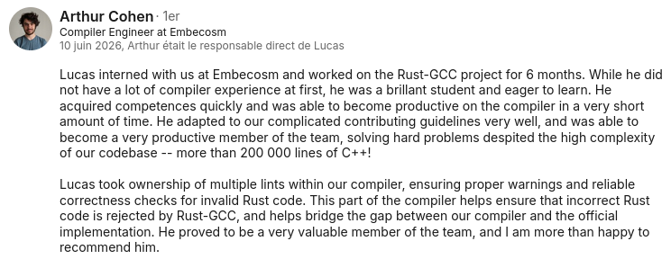
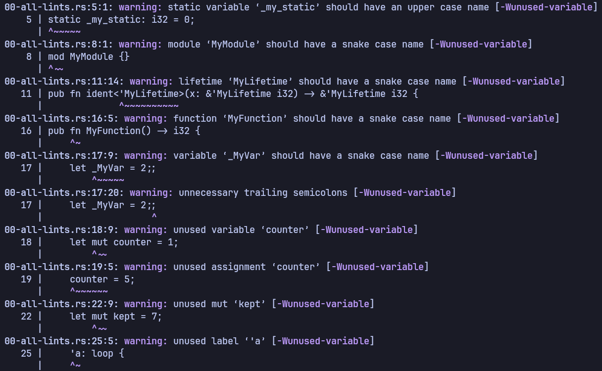

gccrs (GCC Rust front-end)
Native Rust support inside GCC. As a compiler engineering intern at Embecosm I took ownership of multiple lints, and I've kept contributing since: 50+ pull requests across the compiler pipeline, merging into the project with more on the way, building out gccrs's warn-by-default lint set to match rustc.
Overview
I spent six months at Embecosm contributing to gccrs, the GCC Rust front-end (a production-grade open-source compiler that brings Rust support to GCC), and have kept going since. I've opened 50+ pull requests across the compiler pipeline (merging into the project now, with more on the way), focused on lint accuracy, diagnostics quality and the overall compilation feedback experience: making sure incorrect Rust is rejected the way the official rustc rejects it, and that the warnings read clearly.
Recommendation
"Lucas interned with us at Embecosm and worked on the Rust-GCC project for 6 months. While he did not have a lot of compiler experience at first, he was a brilliant student and eager to learn. He acquired competences quickly and was able to become productive on the compiler in a very short amount of time. He adapted to our complicated contributing guidelines very well, and became a very productive member of the team, solving hard problems despite the high complexity of our codebase: more than 200,000 lines of C++!"
"Lucas took ownership of multiple lints within our compiler, ensuring proper warnings and reliable correctness checks for invalid Rust code. This part of the compiler helps ensure that incorrect Rust code is rejected by Rust-GCC, and helps bridge the gap between our compiler and the official implementation. He proved to be a very valuable member of the team, and I am more than happy to recommend him."
Arthur Cohen · Compiler Engineer at Embecosm · gccrs mentor

What I built: the lints
I owned a family of lints in gccrs's unused / naming-convention checks, mirroring rustc so the compiler rejects and warns on exactly the code the official toolchain does: naming conventions (snake-case, upper-case globals), unused variables, assignments, mut and labels, and redundant semicolons. Landing them cleanly meant first reworking the unused-variable lint and the HIR string helpers underneath.
Still at it after the internship
The internship ended, the work didn't. I kept going at the warn-by-default lint set, auditing gccrs against rustc -W help tier by tier and implementing the ones that were missing. A recent push added a whole batch of new lints, among them while_true, path_statements, unreachable_patterns, unused_braces, unused_comparisons, unused_doc_comments, non_shorthand_field_patterns, trivial_numeric_casts, unused_unsafe, drop_bounds, deprecated ... range patterns, bare_trait_objects, double_negations, static_mut_refs and more.
Some of these couldn't live in a tidy HIR pass: bare_trait_objects had to go into the type checker, and a couple of candidates turned out to be blocked by pre-existing compiler bugs, so I fixed those too (ICEs on generic type aliases and on break 'label value) to unblock the lints behind them. The audit itself became a reusable map of what rustc warns on, what gccrs already covers, and what each remaining lint would need (type info, CFG, resolver or macro machinery).
In action
One file exercising the lints at once:
$ gccrs -frust-incomplete-and-experimental-compiler-do-not-use \
-frust-unused-check-2.0 -S 00-all-lints.rs

Growing the project, not just the code
Beyond the lints, I opened 30+ issues across the compiler: well-scoped, reproducible bug and missing-diagnostic reports. They became on-ramps: several turned into first contributions for newcomers joining the project, which is part of how an open-source compiler actually grows. I also fixed correctness bugs myself along the way: a segfault on an empty doc attribute, a cfg attribute without parentheses, and a missing check when a derive targets the wrong item.
"Je voulais vous dire, c'est très cool les issues que vous avez créées, visiblement ça a motivé des nouveaux arrivants à les faire, et on avance bien du côté des erreurs sur les attributs."
"I wanted to say: the issues you opened are really cool; they clearly motivated newcomers to take them on, and we're making good progress on the attribute errors."
Pierre-Emmanuel Patry · gccrs mentor
The full set of my work is in my issues and pull requests.